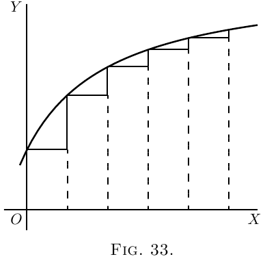

假设斜率为常数，如 图 31 所示。
这里，$\dfrac{dy}{dx}$ 是常数。
不过，假设有一种情形像 图 32 那样，斜率本身向上变大，
那么 $\dfrac{d\left(\dfrac{dy}{dx}\right)}{dx}$，也就是
$\dfrac{d^2y}{dx^2}$，将为正。
如果随着你向右走，斜率变小（如 图 14），
或如 图 33，那么即使曲线仍在向上走，
由于这种变化是在减小它的斜率，它的 $\dfrac{d^2y}{dx^2}$ 也会是负。
 现在该让你知道另一个秘密了：怎样判断你通过“令其等于零”得到的结果是极大值还是极小值。
诀窍是这样的：求导之后（得到要令为零的那个表达式），再求一次导，
看看第二次求导的结果是正还是负。如果 $\dfrac{d^2y}{dx^2}$
算出来是正，就知道你得到的 $y$ 值是极小值；但如果
$\dfrac{d^2y}{dx^2}$ 算出来是负，那么你得到的 $y$ 值必定是极大值。
规则就是这样。
原因应当相当明显。想想任何一条有极小点的曲线（比如 图 15），
或像 图 34 这样，$y$ 的极小点标为 $M$，曲线向上凹。
在 $M$ 的左边，斜率向下，也就是负的，并且越来越不负。在 $M$ 的右边，
斜率已经变成向上，而且越来越向上。显然，当曲线穿过 $M$ 时，斜率的变化使
$\dfrac{d^2y}{dx^2}$ 为正；因为随着 $x$ 向右增加，它的作用就是把向下的斜率变成向上的斜率。
同样，考虑任何一条有极大点的曲线（比如 图 16），
或像 图 35 这样，曲线上凸（向下凹），并且极大点标为 $M$。
在这种情形下，当曲线从左到右经过 $M$ 时，它的向上斜率变成向下斜率或负斜率；
所以此时“斜率的斜率” $\dfrac{d^2y}{dx^2}$ 为负。
现在回到上一章的例子，用这种方法验证在各个具体情形下到底是极大值还是极小值。
下面有几个算好的例子。
(1) 求下列函数的极大值或极小值：
\begin{align*}
\text{(a)}\quad y &= 4x^2-9x-6; \qquad \text{(b)}\quad y = 6 + 9x-4x^2; \\
\end{align*}
并判断每种情形下它是极大值还是极小值。
\begin{align*}
\text{(a)}\quad \dfrac{dy}{dx}
&= 8x-9=0;\quad x=1\tfrac{1}{8},\quad \text{且 } y = -11.065.\\
\dfrac{d^2y}{dx^2}
&= 8;\quad \text{它为正；因此这是极小值。} \\
\text{(b)}\quad {\dfrac{dy}{dx}}
&= 9-8x=0;\quad x = 1\tfrac{1}{8};\quad \text{且 } y = +11.065.\\
\dfrac{d^2y}{dx^2}
&= -8;\quad \text{它为负；因此这是极大值。}
\end{align*}
(2) 求函数
$y = x^3-3x+16$.
\begin{align*}
\dfrac{dy}{dx}
&= 3x^2 - 3 = 0;\quad x^2 = 1;\quad \text{且 } x = ±1.\\
\dfrac{d^2y}{dx^2}
&= 6x;\quad \text{当 } x = 1 \text{ 时，它为正};
\end{align*}
因此 $x=1$ 对应极小值 $y=14$。当 $x=-1$ 时它为 $-$；
因此 $x=-1$ 对应极大值 $y=+18$。
(3) 求 $y=\dfrac{x-1}{x^2+2}$ 的极大值和极小值。
\[
\frac{dy}{dx} = \frac{(x^2+2) × 1 - (x-1) × 2x}{(x^2+2)^2}
= \frac{2x - x^2 + 2}{(x^2 + 2)^2} = 0;
\]
或 $x^2 - 2x - 2 = 0$，其解为 $x =+2.73$ 和 $x=-0.73$。
\begin{align*}
\dfrac{d^2y}{dx^2}
&= - \frac{(x^2 + 2)^2 × (2x-2) - (x^2 - 2x - 2)(4x^3 + 8x)}{(x^2 + 2)^4} \\
&= - \frac{2x^5 - 6x^4 - 8x^3 - 8x^2 - 24x + 8}{(x^2 + 2)^4}.
\end{align*}
分母总是正的，所以只需确定分子的符号。
如果取 $x = 2.73$，分子为负；这是极大值，$y = 0.183$。
如果取 $x=-0.73$，分子为正；这是极小值，$y=-0.683$。
(4) 某工厂处理产品的费用 $C$ 随每周产量 $P$ 变化，其关系为
$C = aP + \dfrac{b}{c+P} + d$，其中 $a$, $b$, $c$, $d$ 都是正的常数。
在什么产量下费用最小？
\[
\dfrac{dC}{dP} = a - \frac{b}{(c+P)^2} = 0\quad \text{作为极大值或极小值的条件；}
\]
因此 $a = \dfrac{b}{(c+P)^2}$，且 $P = ±\sqrt{\dfrac{b}{a}} - c$。
由于产量不能为负，$P=+\sqrt{\dfrac{b}{a}} - c$。
\begin{align*}
\text{现在}\quad
\frac{d^2C}{dP^2} &= + \frac{b(2c + 2P)}{(c + P)^4},
\end{align*}
它对所有 $P$ 的值都为正；因此 $P = +\sqrt{\dfrac{b}{a}} - c$ 对应极小值。
(5) 用 $N$ 盏某种灯照亮一栋建筑，每小时总成本 $C$ 为
\[
C = N\left(\frac{C_l}{t} + \frac{EPC_e}{1000}\right),
\]
其中 $E$ 是商业效率（每烛光所需瓦数），
$P$ 是每盏灯的烛光强度， 此外，灯的平均寿命与其运行时的商业效率之间大约有关系 $t = mE^n$，
其中 $m$ 和 $n$ 是取决于灯的种类的常数。
求使照明总成本最小的商业效率。
\begin{align*}
\text{有}\;
C &= N\left(\frac{C_l}{m} E^{-n} + \frac{PC_e}{1000} E\right), \\
\dfrac{dC}{dE}
&= \frac{PC_e}{1000} - \frac{nC_l}{m} E^{-(n+1)} = 0
\end{align*}
作为极大值或极小值的条件。
\[
E^{n+1} = \frac{1000 × nC_l}{mPC_e}\quad \text{且}\quad
E = \sqrt[n+1]{\frac{1000 × nC_l}{mPC_e}}.
\]
这显然是极小值，因为
\[
\frac{d^2C}{dE^2} = (n + 1) \frac{nC_l}{m} E^{-(n+2)},
\]
当 $E$ 为正时，它是正的。
对于某种 $16$ 烛光的灯，$C_l= 17$ 便士，$C_e=5$ 便士；
并且发现 $m=10$, $n=3.6$。
\[
E = \sqrt[4.6]{\frac{1000 × 3.6 × 17}{10 × 16 × 5}}
= 2.6\text{ 瓦/烛光}.
\]
(2) 已知 $y = \dfrac{b}{a}x - cx^2$，求 $\dfrac{dy}{dx}$ 和
$\dfrac{d^2y}{dx^2}$ 的表达式；还要求出使 $y$ 取极大值或极小值的 $x$ 值，
并说明它是极大值还是极小值。
(3) 求方程为
\[
y = 1 - \frac{x^2}{2} + \frac{x^4}{24};
\]
的曲线有多少个极大值、多少个极小值；再求方程为
\[
y = 1 - \frac{x^2}{2} + \frac{x^4}{24} - \frac{x^6}{720}.
\]
的曲线有多少个。
(4) 求下列函数的极大值和极小值：
\[
y=2x+1+\frac{5}{x^2}.
\]
(5) 求下列函数的极大值和极小值：
\[
y=\frac{3}{x^2+x+1}.
\]
(6) 求下列函数的极大值和极小值：
\[
y=\frac{5x}{2+x^2}.
\]
(7) 求下列函数的极大值和极小值：
\[
y=\frac{3x}{x^2-3} + \frac{x}{2} + 5.
\]
(8) 把一个数 $N$ 分成两部分，使其中一部分平方的三倍加上另一部分平方的两倍为最小。
(9) 一台发电机在不同输出 $x$ 下的效率 $u$ 由一般方程表示：
\[
u=\frac{x}{a+bx+cx^2};
\]
其中 $a$ 是一个常数，主要取决于铁中的能量损耗；$c$ 是一个常数，主要取决于铜部件的电阻。
求使效率最大的输出值表达式。
(10) 设已知某艘汽船的耗煤量可用公式 $y = 0.3 + 0.001v^3$ 表示；
其中 $y$ 是每小时燃烧的煤吨数，$v$ 是速度，单位为海里每小时。该船的工资、资本利息和折旧成本合计起来，
每小时等于 $1$ 吨煤的成本。什么速度会使 $1000$ 海里航程的总成本最小？
如果煤价为每吨 $10$ 先令，那么这次航程的最小成本是多少？
(11) 求下列函数的极大值和极小值：
\[
y = ±\frac{x}{6}\sqrt{x(10-x)}.
\]
(12) 求下列函数的极大值和极小值：
\[
y= 4x^3 - x^2 - 2x + 1.
\]
(1) 极大值：$x = -2.19$, $y = 24.19$；极小值：$x = 1.52$, $y = -1.38$。
(2) $\dfrac{dy}{dx} = \dfrac{b}{a} - 2cx$；$\dfrac{d^2 y}{dx^2} = -2c$；
$x = \dfrac{b}{2ac}$（极大值）。
(3) (a ) 一个极大值和两个极小值。
(b ) 一个极大值。（$x = 0$；其他点非实数。）
(4) 极小值：$x = 1.71$, $y = 6.14$。
(5) 极大值：$x = -.5$, $y = 4$。
(6) 极大值：$x = 1.414$, $y = 1.7675$。
极小值：$x = -1.414$, $y = 1.7675$。
(7) 极大值：$x = -3.565$, $y = 2.12$。
极小值：$x = +3.565$, $y = 7.88$。
(8) $0.4N$, $0.6N$.
(9) $x = \sqrt{\dfrac{a}{c}}$.
(10) 速度为每小时 $8.66$ 海里。所需时间 $115.47$ 小时。
最小成本 £$112$. $12$s。
(11) 当 $x = 7.5$, $y = ±5.414$ 时有极大值和极小值。（见这里的例 10。）
(12) 极小值：$x = \frac{1}{2}$, $y= 0.25$；极大值：$x = - \frac{1}{3}$, $y= 1.408$。


$t$ 是每盏灯的平均寿命，单位为小时，
$C_l =$ 每使用一小时的更换成本，以便士计，
$C_e =$ 每 $1000$ 瓦小时的电能成本。
习题 X
（建议你把任何数值例子的图像画出来。）
(1) 求下列函数的极大值和极小值：
\[
y = x^3 + x^2 - 10x + 8.
\]
答案
下一章 →
主页 ↑